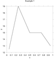

|
Chapters: 1: Introduction 2: Simple example 3: Invocation 4: Finer Control 5: X-Y Plots 6: Contour Plots 7: Image Plots 8: Examples 9: Gri Commands 10: Programming 11: Environment 12: Emacs Mode 13: History 14: Installation 15: Gri Bugs 16: Test Suite 17: Gri in Press 18: Acknowledgments 19: License Indices: Concepts Commands Variables |
2: Simple Gri Program and How to Run itThis chapter introduces Gri with a common example: an x-y graph. The example is discussed in detail later (see X-y Plots). The data files and command files here and throughout the manual should be available to you in a directory `.../gri/examples' on unix machines.
2.1: Gri Command fileHere is a Gri command file to plot a linegraph of a set of (x,y) data, stored as space-separated columns in a file called `example1.dat':
The first line is a comment, as are all things following hash symbols (` The other lines are Gri command lines; (see X-y Plots) for more explanation.
2.2: Data FileThe data file `example1.dat' looks like:
Note that spaces (or tabs) separate numbers. Any data line may have a comment on it, just as any command line may.
2.3: Running The Command FileType `gri example1.gri' at the system prompt. Gri will create a PostScript file called `example1.ps'. For details on running Gri see see Invoking Gri.
2.4: Output GraphThe output PostScript file is called `example1.ps'. Click the plot to enlarge it.) It looks something like the miniature shown above. To view Gri output, use your favorite PostScript previewer. Note that in the above example, Gri automatically chose reasonable scales for the axes, based on the range of the data. The next chapter illustrates that Gri also gives you control over such things.
|

{kind=link}